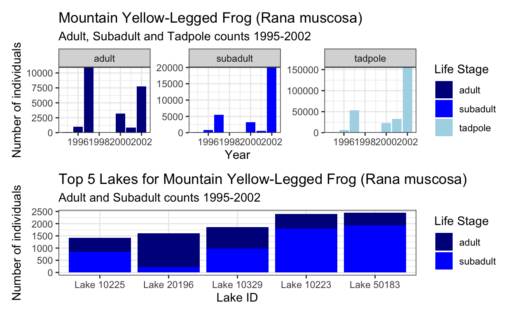

Basic data wrangling and data visualization with ggploty() of the Mountain yellow-legged frog (Rana muscosa).
Summary: From the Environmental Data Initiative repository: “The Sierra Lakes Inventory Project (SLIP) was a research endeavor that ran from 1995-2002 and has supported research and management of Sierra Nevada aquatic ecosystems and their terrestrial interfaces. We described the physical characteristics of and surveyed aquatic communities for > 8,000 lentic water bodies in the southern Sierra Nevada, including lakes, ponds, marshes, and meadows.”
Source: Knapp, R.A., C. Pavelka, E.E. Hegeman, and T.C. Smith. 2020. The Sierra Lakes Inventory Project: Non-Native fish and community composition of lakes and ponds in the Sierra Nevada, California ver 2. Environmental Data Initiative.
#total count per year across all bodies of water by live stage, excluding the egg mass level
#wrangle the data to include only RAMU species, excluding "EggMass" lifecycle, and grouped by year.
#read in the data and basic wrangle
amphibians_main <- read_excel("sierra_amphibians.xlsx") %>%
mutate(across(where(is.character), tolower))
#geom col and dodge function
frogs_1 <- amphibians_main %>%
filter(amphibian_species == "ramu",
amphibian_life_stage %in% c("adult", "subadult", "tadpole")) %>%
select(-lake_id, -amphibian_state, -amphibian_location, -amphibian_voucher) %>%
drop_na() %>%
mutate(survey_date = year(survey_date)) %>%
count(survey_date, amphibian_life_stage, wt = amphibian_number) %>%
rename(total_count = n)
#Plot it
frogs_plot_1 <- ggplot(frogs_1, aes(x = survey_date, y = total_count)) +
geom_col(aes(fill = amphibian_life_stage),
position = "dodge") +
facet_wrap(~amphibian_life_stage, scales = "free") +
labs(x = "Year",
y = "Number of individuals",
title = "Mountain Yellow-Legged Frog (Rana muscosa)",
subtitle = "Adult, Subadult and Tadpole counts 1995-2002",
fill = "Life Stage") +
scale_fill_manual(values = c("dark blue","blue","light blue")) +
scale_y_continuous(expand = c(0,0)) +
theme_bw()
frogs_plot_1
ggplotly(frogs_plot_1)
#ggsave(here("figures", "frogs_plot_1.png"), width = 5, height = 5)
Figure 1. This plot shows the total counts of yellow-legged frogs in three of their life stages (adult, subadult, and tadpole) between 1995 and 2002. There are two years where the data was not recorded in 1998 and 1999. Also note the number of individuals has been rescaled for each life stage to show a more detailed look at the count trends. Here, the counts across all life stages increase from 1996 to 1997, decrease between 1997 and 2001 and then increase again in 2002.
#wrangle data to include total counts for only adult and subadult in the top 5 lakes with the most counts.
frogs_2 <- amphibians_main %>%
filter(amphibian_species == "ramu",
amphibian_life_stage %in% c("adult", "subadult"),
amphibian_location == "in lake") %>%
select(-amphibian_state, -amphibian_voucher) %>%
count(lake_id, wt = amphibian_number) %>%
arrange(n) %>%
slice_max(n, n = 5) %>%
rename(amphibian_number = n)
#instead of mutate for lake_id, could also do:
#mutate(amphibian_location = case_when(amphibian_location %in% c("in lake") ~ "Lake"))
#unite("lake_id", amphibian_location, lake_id)
#instead of count could use:
#group_by(lake_id) %>%
#summarize(amphibian_number = sum(amphibian_number))
#new df for ggplot
frogs_2_top5 <- amphibians_main %>%
filter(lake_id %in% frogs_2$lake_id) %>%
filter(amphibian_species == "ramu",
amphibian_life_stage %in% c("adult", "subadult"),
amphibian_location == "in lake") %>%
select(-amphibian_state, -amphibian_voucher) %>%
count(lake_id, amphibian_life_stage, wt = amphibian_number) %>%
mutate(lake_id = paste("Lake", lake_id, sep = " ")) %>%
rename(amphibian_number = n)
#Plot it
frogs_plot_2 <- ggplot(data = frogs_2_top5, aes(x = amphibian_number, y = fct_reorder(lake_id, amphibian_number), fill = amphibian_life_stage)) +
geom_col() +
labs(x = "Number of individuals",
y = "Lake ID",
title = "Top 5 Lakes for Mountain Yellow-Legged Frog (Rana muscosa)",
subtitle = "Adult and Subadult counts 1995-2002",
fill = "Life Stage") +
scale_fill_manual(values = c("dark blue","blue")) +
theme_bw() +
coord_flip()
frogs_plot_2
#for legends and labels:
#scale_color_manual() instead of scale_fill_discrete()
#how to change the columns to show colors for subadult and adult
#how to change Lake_id to have no underscore
ggplotly(frogs_plot_2)
#ggsave(here("figures", "frogs_plot_2.png"), width = 5, height = 5)
Figure 2. This figure shows the five lakes where the highest number of yellow-legged frogs were found for adult and subadult life stages combined. The lake identification is kept anaonymous for the sake of the study. Most of the lakes have similar ratios of adult and subadults found, except Lake 20196 has more adult yellow-legged frogs than subadult.
#testing plot combos
#side by side
frogs_plot_1 | frogs_plot_2
#test vertical stacking
frog_plot_combo <- frogs_plot_1 / frogs_plot_2 & theme_bw()
frog_plot_combo
#Export the most recently run graph
#ggsave(here("figures", "frog_plot_combo_vr.png"), width = 5, height = 5)
frog_plot_combo

Figure 3. Here are two plots looking at the counts of the mountain yellow-legged frog (Rana Muscosa) at different life stages throughout the Sierra Mountains in California from 1995-2002. The first plot looks at counts for adult, subadult and tadpole lifestages throughout the study. The second plot is the top five lakes for total number of only adult and subadult life stages found.